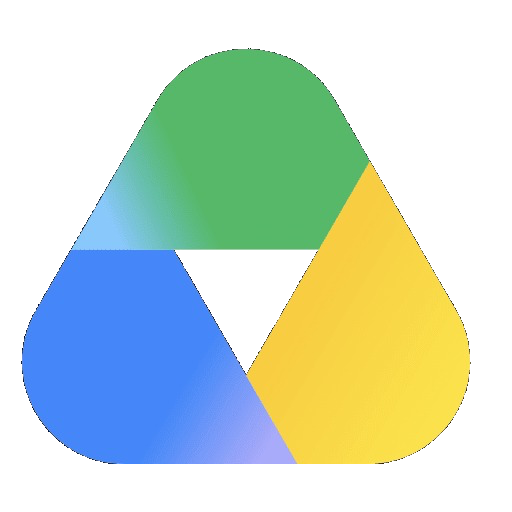

<!-- Minimal Notion-Style Drive Row Component (Saved for future use) -->
<div class="notion-drive-row">
    <div class="notion-drive-left">
        
        <div class="notion-drive-text">
            <span class="notion-drive-title">Google Drive</span>
            <span class="notion-drive-sub">Click to view all my projects</span>
        </div>
    </div>
    <a href="https://drive.google.com/drive/folders/1On6a-IyVoyaipef-yL_wKmBaeeg2fFUR?usp=sharing" target="_blank" rel="noopener noreferrer" class="notion-drive-link-btn" id="google-drive-link">
        <span>Open Drive</span>
        <svg viewBox="0 0 16 16" fill="none" class="drive-btn-arrow" xmlns="http://www.w3.org/2000/svg">
            <path d="M4.5 11.5L11.5 4.5M11.5 4.5H5.5M11.5 4.5V10.5" stroke="currentColor" stroke-width="1.6" stroke-linecap="round" stroke-linejoin="round"/>
        </svg>
    </a>
</div>
